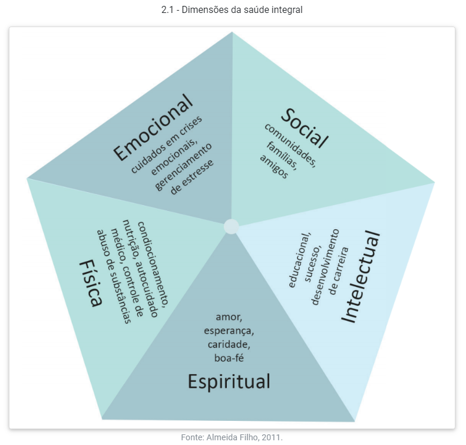
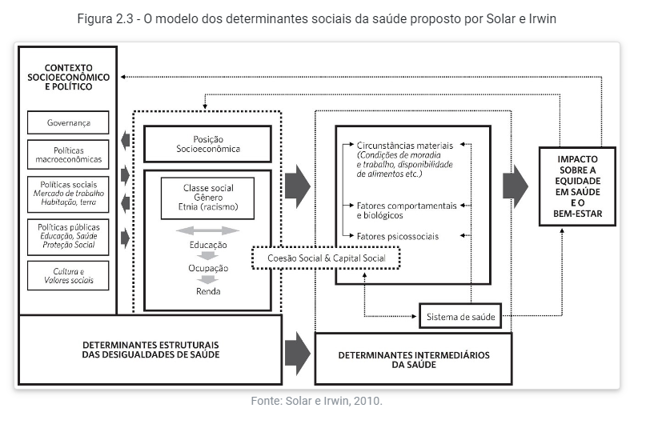

UNIDADE 1
HISTÓRICO
CUIDAR/CUIDADO
o cuidado como um fator de sobrevivência e necessidade humana, por sermos seres sociais.
Reflexão: Apenas os seres humanos tem esse instinto de cuidado?
PRÉ HISTÓRIA
Os seres humanos são dependentes dos conhecimentos que foram passados geração após geração. (...) O sobrenatural ou pensamento mágico ou místico reinava nesse período. Tudo estava ligado à religiosidade ou espiritualidade, inclusive os aspectos relacionados à saúde e à doença.
Uso de plantas medicinais, ervas eméticas e rituais de cura - como trepanação de crânio.
ANTIGUIDADE
EGÍPCIOS: Plantas medicionais, mumificação e escolas de saúde ligadas à religião;
ÍNDIA ANTIGA (200 a.C.): estudo do pulso, exames de urina, fezes, escarro e vômito, parto cesáreo, amputações, rinoplastia indiana, hospitais e plantas medicinais.
MESOPOTÂMIA: hepatoscopia, plantas medicinais e sacerdotes de cura.
CHINA: medicina tradicional chinesa (baseada no yin yang), acupuntura e práticas integrativas de saúde.
GRÉCIA ANTIGA: pensamento simbólico e virtudes relacionadas aos vários deuses, preferiam remediar a doença
O deus grego Asclépio (ou Esculápio, em latim) representava o deus da medicina e da saúde. Segundo a mitologia, Asclépio se casou com Epíone, a deusa calmante da dor, e tiveram vários filhos, incluindo a presença de duas irmãs que disputavam entre si. As irmãs eram Panaceia, a deusa da cura, e Higeia, a deusa da preservação da saúde.
ROMA ANTIGA: cirurgias, descrição do sistema nervoso central
IDADE MÉDIA
Pouco desenvolvimento da saúde; proibições pela Igreja: sem acesso a cadaveres, doença era pecado ou falta de fé; prescrições: rezas, exorcismos, imagens santas
IDADE MODERNA
- Doenças infecciosas: peste negra, sífilis, febre tifóide.
- Ferimentos por arma de fogo.
- estudos de anatomia por desenhos
- compilados e enciclopedias
- microscópios
IDADE CONTEMPORÂNEA
A Idade Contemporânea, especialmente no século XVIII, foi marcada por um período de gigantes transformações na estrutura da sociedade (mudança do campo para as cidades), desenvolvimento industrial e tecnológico (revolução industrial), maior capacidade de transporte (criação da máquina a vapor) e do desenvolvimento do sistema capitalista. O período gerou muita miséria e fome (...) A caridade e cuidados gratuitos com a saúde eram realizados nas Santas Casas de Misericórdia da Igreja Católica, o que era muito pouco, já que a maior parcela da população não tinha nenhuma assistência à saúde.
No séc XVIII passou a pensar a saúde pública, como parte do cuidado com a mão de obra que o capitalismo precisava.
- evitar uma nova peste negra / epidemia
- pioneiros: Inglaterra, França, Alemanha
- medicina da força de trabalho (ING) - apenas quem tinha carteira assinada
- medicina urbana (FR) - eliminação de cortiços e moradores de rua
- medicina de polícia (GER) - população era obrigada a cumprir medidas autoritárias do Estado
- EUA: mercantilização da saúde
CONCEITOS
| MODELO BIOMÉDICO | MODELO BIOPSICOSSOCIAL |
|---|---|
| Formação de especialistas, biologicismo, individualismo, curativismo | Generalista, considera fatores sociais e psicológicos, integralidade do paciente, trabalho em equipe |
| doença é alteração no corpo | doença é multifatorial |
| saude é ausência de sinais e sintomas | saude não é apenas ausência de doenças, mas considera questões sociais e psicológicas |
DOENÇA
um conjunto de respostas desarmônicas do organismo frente aos estímulos patológicos (fatores causais ou etiológicos) (...) pode ser investigada por meio da descrição dos sintomas e da observação dos sinais clínicos.
- caráter objetivo
- prevenção
SAÚDE
A Organização Mundial da Saúde (OMS), em 1947, conceituou saúde como “o completo bem-estar físico, mental e social, e não somente a ausência de doenças ou enfermidades” (OMS, 2006).
- subjetivo
- não da pra medir o nivel de saude do indivíduo
- não é necessário que seja completo
- a sociedade não é saudável
- qualidade de vida

DETERMINANTES SOCIAIS DA SAÚDE
Classe social, renda, escolaridade, acesso à educação, cultura, informação, esporte e lazer
Modelo que leva em consideradarção os determinantes sociais da saude juntamente das desigualdades e os determinantes intermediários:

SAUDE-DOENÇA-CUIDADO
- processo complexo e multifatorial
- intersetorial: vários setorews da sociedade
- escolas, universidades, igrejas, centros comunitários